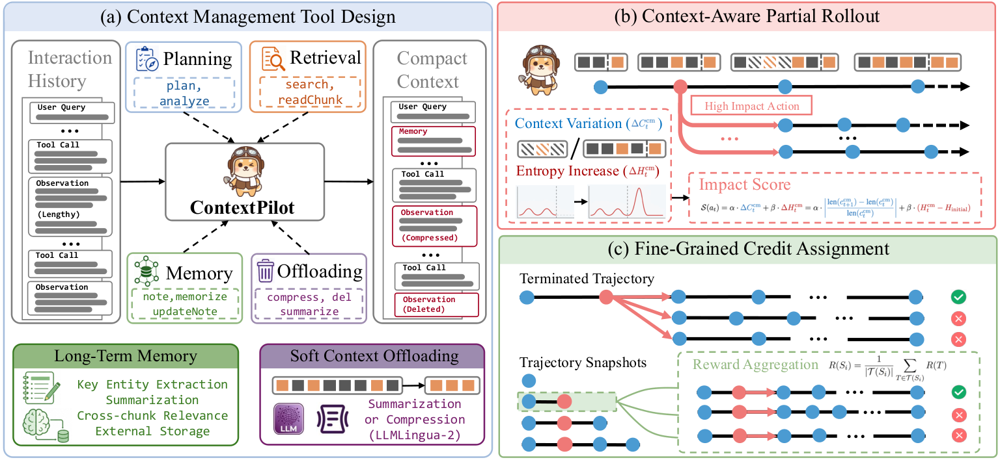

ContextPilot: Teaching Agents Proactive Context Management via Fine-Grained RL (Tencent)
TL;DR
- ContextPilot (Pan, Pei, Lu et al. — Tencent) trains agents to manage their own working context as a first-class skill: it extends the proactive context-management toolset beyond search/delete/summarize to planning, structured long-term memory (
memorize/readMemory), and soft offloading (summarizeContext,compressContext,foldHistory— recoverable, unlike deletion). - The RL contribution is fine-grained credit assignment for context edits: instead of smearing the final trajectory reward over every edit, it scores each edit by context variation + entropy variation, branches extra rollouts at the most critical edits, and computes action-level advantages from all terminal trajectories passing through that edit — GRPO over trajectory snapshots rather than trajectories.
- With a 32K window, ContextPilot-8B-RL averages 69.40 across NovelQA / ∞Bench / LongMemEval-S / BrowseComp+, beating the 128K no-tools backbone (45.93), the prompt-only tools baseline (27.61 — tools hurt without training!), and StateLM-8B-RL (65.85), while holding per-turn input at ~8–10K tokens vs ~30K for a ReAct-style agent.
Why this matters
This is the training-side answer to the question SKILL.state answered at the architecture level: append-only history is the wrong data structure for long-horizon agents, but what replaces it, and who decides when to compress? SKILL.state hard-codes the policy (validated state updates, discard reasoning); ContextPilot instead gives the model a rich edit toolset and asks RL to learn the policy. The pilot-study numbers explain why prompting isn't enough — handing Qwen3-8B the tools without training drops its average from 45.93 to 27.61. Context management is a genuine skill with a real learning problem attached.
The learning problem is exactly the credit-assignment gap this tracker keeps circling (see TRACE, SP3O): a foldHistory call at turn 7 changes everything downstream, but under trajectory-level GRPO it inherits whatever reward the final answer happens to get. The paper's Figure 3 case study makes it concrete: correct answers can ride on sloppy context management (brute-force repeated retrieval) while wrong answers can contain excellent management — trajectory reward actively mistrains the editing policy. Their fix — measure which edits matter, branch there, and use branch statistics as action values — is a general recipe for any tool whose effect is indirect and delayed, which describes most of context engineering.
The core idea
In the proactive paradigm, the agent's context is no longer append-only. A context-management action \( a_i^{\mathrm{cm}} \) triggers a transition function before the usual append:
where \( c_i \) is the working context, \( t_i, a_i, o_i \) are thought, tool call, and observation. Because edits rewrite history, trajectories are segmented at context-editing operations into snapshots \( S_1,\dots,S_{M+1} \), each trained as an independent instance with loss masking on repeated content (following StateLM).
Two signals identify critical edits. Context variation measures how much an edit reshapes the prompt, and entropy variation measures how much it shifts the model's uncertainty relative to the trajectory's start:
with \( H_t^{\mathrm{cm}} \) the mean entropy of the first \( k \) tokens generated after the edit's observation, and \( \alpha,\beta \) mixing weights. High-sensitivity edits get extra branched rollouts, and each snapshot's reward is the mean over terminal trajectories that extend it:
where \( \mathcal{T}(S_i) \) is the set of terminal trajectories with prefix \( S_i \), \( \mathcal{G} \) groups all snapshots for a query, and \( \hat{A} \) is the group-normalized advantage fed to GRPO. Terminal reward is outcome + format − penalties (invalid tool calls, context-length violations).
How it works
per query q (budget N=128 snapshots):
1. run 8 trajectory-level rollouts with the full toolset
(perception/planning, retrieval, notes, memory, offloading — Table 1)
2. segment each trajectory at context-editing ops -> up to M=64 snapshots
3. if M < N: # spend remainder on partial rollouts
4. for each context-management action a_t in existing trajectories:
5. sensitivity S(a_t) = α·ΔC_t + β·ΔH_t
6. pick top (N - M) actions by S; branch from each parent state
7. sample continuation sub-trajectories -> more snapshots
8. reward terminal snapshots: R = R_out + R_fmt + R_pen
9. propagate to intermediate snapshots: R(S_i) = mean R over descendants
10. group-normalize within query (GRPO) -> per-snapshot advantages
11. update policy treating each snapshot as an independent sample
(token loss masking over content repeated across snapshots)
pipeline: SFT first (teacher runs inside a rule-scaffolded harness that
hints readChunk-after-search, forces offloading near budget; scaffolding
is stripped from the SFT traces) -> then the RL above. 30K input cap.
The toolset design matters as much as the RL. memorize extracts entities, timestamps, and event episodes with edges to related items; readMemory retrieves a memory with its neighbors. foldHistory is the aggressive move: discard all history into a searchable index plus keyword summary — recoverable via searchContext, which is what makes it "soft" offloading rather than deletion. Offloading, memory-writing, and memory-updating count as context-editing ops (they trigger snapshot boundaries).

Figure 1 from the paper: (a) the extended toolset — planning, long-term memory, and soft context offloading on top of retrieval/deletion/summarization; (b) RL with context-aware partial rollout branching at critical edits and fine-grained, snapshot-level credit assignment.Results
Long-context QA (NovelQA-Copyright, ∞Bench En.MC, LongMemEval-S, BrowseComp+; 32K window unless noted; mean of 3 runs):
- Qwen3-8B: backbone w/o tools (128K) 45.93 avg; w/ tools but no training 27.61; ContextPilot-8B (SFT) 65.78; ContextPilot-8B-RL 69.40 — +3.55 avg over StateLM-8B-RL (65.85), with BrowseComp+ 54.18 vs 46.44. Similar pattern for 14B (72.20) and Gemma4-E4B (60.96, +6.22 from RL).
- RL helps most where contexts are longest: +5.34 on BrowseComp+ (~552K-token inputs) vs modest gains on NovelQA (~119K, partly covered by SFT data). Deep search: beats SUPO by +1.51 avg across WebSailor-7B and WebExplorer-8B backbones on GAIA/BrowseComp/BrowseComp-ZH/xBench.
- Tool ablation (Qwen3.5-397B-A17B, prompted): original tools 77.89 → +planning 80.29 → +soft offloading 83.08 → +long-term memory 87.16 (BrowseComp+ climbs 63.49 → 80.96) — and that full-toolset 397B at 32K beats its own 256K no-tools variant (80.55). Each tool family pays rent.
- Efficiency: on BrowseComp trajectories ≥15 turns, per-turn input stabilizes at ~8–10K tokens vs ~30K (near-linear growth) for WebExplorer-8B.
- Behavioral shifts during RL: retrieval's share of tool calls (~half, early) falls while planning, memory, and offloading rise; failure rates of memory/offloading tools drop in tandem with task success — the SFT model could invoke these tools but didn't understand their preconditions.
How it connects
- SKILL.state (user-hearted; new like merged today): fixed, validated execution state vs learned, tool-mediated editing — the two poles of post-append-only design. SKILL.state is cheaper and architecture-agnostic; ContextPilot is adaptive and trainable. An obvious hybrid: SKILL.state's schema as the memory substrate, ContextPilot's RL to learn when to write it.
- TRACE and SP3O: the credit-assignment lineage. TRACE scores turns, SP3O scores segments via preferences; ContextPilot picks branch points by measured sensitivity — closer to a targeted tree-search value estimate than a uniform decomposition, and probably the right pattern for any sparse-consequence tool call.
- Agent Zero Memory (tracked today): the systems-side complement — provenance, citation locks, tri-system memory, but hand-designed policies. ContextPilot suggests the write/prune policies in such systems are trainable.
- Selective Forgetting (tracked today): cautionary pairing — its graph memory lost to flat retrieval on LongMemEval because entity extraction destroys surface form. ContextPilot's
memorizebuilds exactly that kind of entity/event graph; its wins may rely onreadChunk/searchContextkeeping raw text reachable when the graph abstraction fails. - The Handoff Tax (tracked today): context curation as model-dependent policy — what ContextPilot learns for one backbone may transfer poorly to another, the same executor-coupling HarnessDev found for harnesses.
Critical take
The credit-assignment machinery is the real contribution, and the ablations do show each RL ingredient adds points — but note what the headline comparisons lean on. The 128K-backbone baseline is a soft target (long-context models degrade well before their advertised window), and the most dramatic number — prompted tools halving backbone performance — is measured on an 8B model; the 397B prompted model gains +6.6 from the same tools, so "you must train for this" is really "small models must train for this." The sensitivity score is a clever heuristic, but entropy variation measured on the first \( k \) tokens after an edit conflates "this edit was consequential" with "this edit produced surprising text," and \( \alpha, \beta \) are extra knobs with no reported sweep in the main text (inferred from the thread and main text — verify in the appendix). The 30K input / 2K generation caps also mean we never see the regime where compression decisions get genuinely hard (weeks-long agent sessions, in the spirit of Harness-of-Harness, tracked today). And branching rollouts at up to 128 snapshots per query is expensive — the method buys precision with rollout budget, and there's no compute-matched comparison against simply running more trajectory-level GRPO samples. Still: retrieval calls falling while planning/memory/offloading rise and tool-failure rates dropping is the signature of an actual learned skill, not reward hacking, and that behavioral evidence is more convincing than the benchmark deltas.
If you remember three things
- Context management is a trainable skill, not a prompt feature: untrained tools dropped Qwen3-8B from 45.93 to 27.61 average; SFT+RL lifted it to 69.40 at a 32K window, beating the 128K backbone with ~3× less context per turn.
- Don't give every context edit the trajectory's reward: score edits by context+entropy variation, branch rollouts at the critical ones, and value each edit by its descendants' outcomes — snapshot-level GRPO.
- Soft offloading beats deletion: fold history into a searchable index you can re-enter (
foldHistory+searchContext), and structured memory with neighbors (memorize/readMemory) was the single biggest tool-ablation gain (+4.08 avg, +9.76 on BrowseComp+).